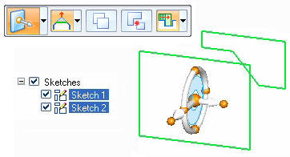
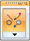

Workflow for a synchronous 3D move or rotate of sketch elements
-
Select sketch geometry.
Selection methods
-
Select entire sketches in PathFinder
-
Select sketch elements individually in the part window.
-
Select sketch elements in the part window with a select box
Note:-
If the sketch elements form a region, disable regions before using the select box.
-
Select set can contain sketch elements on different planes.
-
-
If entire synchronous sketches are selected in PathFinder, the Move command starts.

Use the secondary axis or handle plane to move sketch elements in a plane.
To rotate, drag the handle origin to an edge that will be the axis of rotation. Then click the torus to define the angle of rotation.
Click the Copy option on the command bar to move a copy of the selected sketch elements.
-
If sketch elements are selected in the part window, on the Modify command bar, choose the Move command from the drop list.

Use the graphic handle as described in the previous step to move or rotate the selected sketch elements.
-
After sketches are manipulated and regions were disabled, you will need to remember to enable regions in order to create features from the sketches.